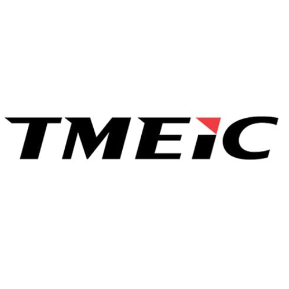
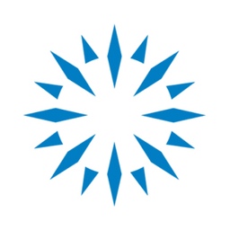

ETL Pipeline using Snowflake, 37,000+ films with interactive Streamlit web app
Full-Stack Phoenix Web-App with Database for learning ASL
Predictive Modeling Kaggle notebook using RandomForest and XGBoost